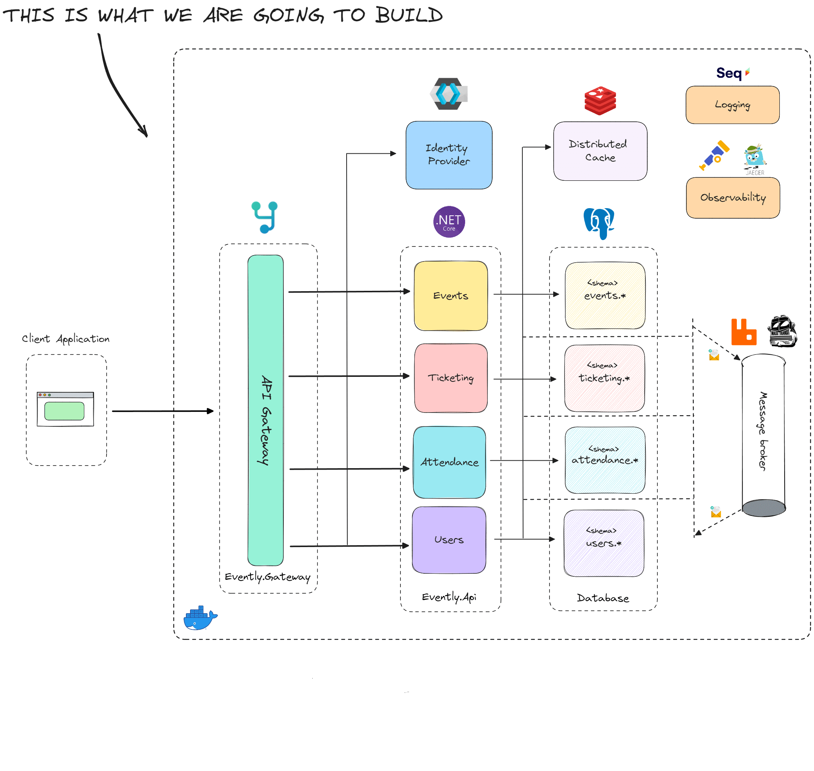

CORE BACKEND
- .NET / ASP.NET Core
- C#
- Clean Architecture
- Domain-Driven Design
- RESTful APIs
- Modular Monolith
- Scalable Systems Design
Designing scalable software architectures and intelligent systems that transform complex technological challenges into resilient digital platforms.


Systems designed to evolve, not just to work.
“Software should not only solve today's problems,
but be prepared for tomorrow's evolution.”
My approach focuses on building architectures that support long-term scalability, maintainability, and technological evolution through strong engineering principles and thoughtful design decisions.
I am Esteban Montoya Herrera, a Senior Software Engineer focused on designing scalable architectures and high-performance software systems.
My background in full-stack development with .NET and Angular provides deep insight into end-to-end system design, enabling me to build resilient platforms aligned with business capabilities.
I am particularly interested in evolutionary architectures, AI-driven platforms, and intelligent systems capable of continuous adaptation and innovation.
Open to collaborating on projects where software architecture and intelligent systems create strategic technological advantage.